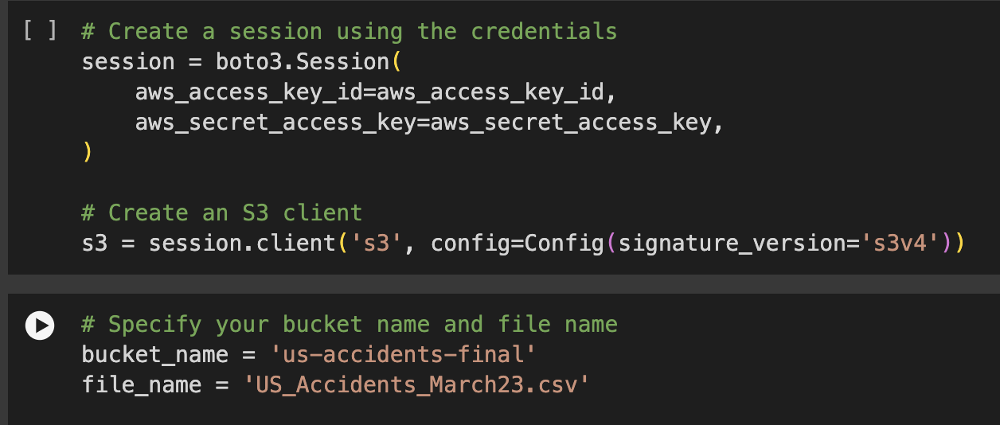
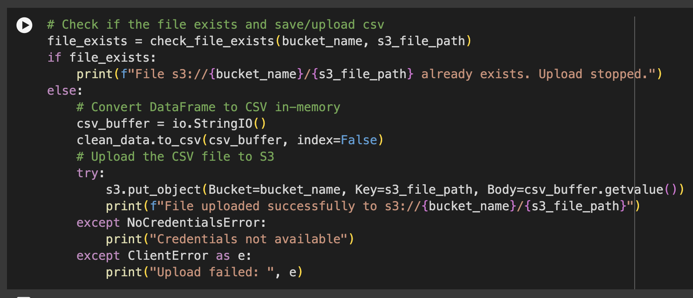

We obtained our dataset from Kaggle.com, which came with a Usage Policy and Legal Disclaimer. The dataset is distributed under the Creative Commons Attribution-Noncommercial-ShareAlike license (CC BY-NC-SA 4.0). We ensured that we adhered to these guidelines by using the dataset strictly for non-commercial, research, or academic purposes and citing the appropriate sources.
After downloading the dataset, we noticed it contained over 7 million rows and 48 columns, which made it quite large. To manage this efficiently, we decided to store the dataset in an AWS S3 Bucket. This allowed us to handle the data more effectively during the cleaning process. We imported the data into our notebook using a method that illustrated below.
We began cleaning this large dataset by applying various functions to recognize and address incomplete, incorrect, inaccurate, or irrelevant data. This process involved:
After completing the data exploration and verification, we converted the cleaned data back to a CSV format and saved it in the existing S3 Bucket as our clean data for further processing.
